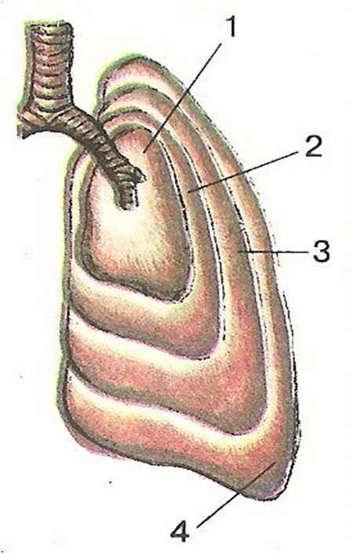

Газообмін у легенях. Життєва ємність легенів
Поняття про дихання та газообмін
Кажуть: потрібний, як повітря, маючи на увазі, щось необхідне, без чого не можна прожити. Дійсно, людина без їжі витримує 40 діб, без води – до 5 днів, а без повітря – лише 5 хв. Дихання людини є обов‘язковою умовою її життя. Дихання-це сукупність процесів, які забезпечують надходження в організм людини кисню, використання його в окислювальних процесах і видалення з організму вуглекислого газу.
Повітря, що вдихає людина, містить 21% кисню, майже 79% азоту та 0,03% вуглекислого газу, невелику кількість інертних газів та водяної пари. Повітря, що людина видихає, містить приблизно 16 % кисню та 4 % вуглекислого газу. Завдяки змінам частоти і глибини дихання в альвеолах( легеневих пухирцях) підтримується відносно стабільний склад газів. Різний вміст кисню і вуглекислого газу у вдихуваному і видихуваному повітрі пояснюється обміном газів у легенях.
Основні етапи дихання та газообміну:
- Перший – зовнішнє дихання - це обмін повітрям між атмосферою та легеневими пухирцями (легенева вентиляція). До цього процесу належать дихальні рухи – вдих і видих, спрямовані на надходження повітря в дихальні шляхи, а з них – до легенів і в зворотному напрямі.
- Другий етап – перехід (шляхом дифузії) кисню з легенів у кров та вуглекислого газу у зворотному напрямі.
- Третій етап – транспортування газів кров’ю. Він полягає в рознесенні кисню до клітин усього організму та перенесенні вуглекислого газу, що утворюється в клітинах, до легенів.
- Четвертий етап – газообмін між кров‘ю і клітинами.
- П’ятий етап – клітинне дихання.
Життєва ємність легенів
У стані спокою доросла людина здійснює за хвилину 12-16 дихальних циклів, під час сну – 10-12, а при фізичному навантаженні, хвилюванні, тяжкий хворобі – до 30-35 дихальних циклів. У маленьких дітей та осіб старшого віку частота дихання в стані спокою вища( 20-25 дихальних циклів за хвилину). Глибина дихання визначається об’ємом вдихуваного і видихуваного повітря. У спокійному стані до легенів під час вдиху надходить близько 0,5 л повітря і стільки само виходить назовні під час видиху – це дихальний об’єм повітря. Після спокійного вдиху за максимального зусилля можна вдихнути ще близько 1,5 л повітря – це додатковий об’єм повітря, а при найглибшому видиху можна видихнути ще 1,5 л – це резервний об’єм повітря. Дихальний, додатковий та резервний об’єми повітря складають життєву ємність легенів.
{kind=link}
Отже, життєвою ємністю легенів називають найбільшу кількість повітря, яку можна видихнути після найбільшого вдиху. Вона залежить від віку, статі, розвитку дихальних м’язів, які особливо розвинені у людини, що займається різними видами спорту. Життєва ємність легенів – один з основних показників фізичного розвитку людини. Її показники коливаються від 3,5 л до 4,8 л у чоловіків і від 3,0 до 0,5 л у жінок. У фізично тренованих осіб життєва ємність легенів може досягати 6,0-7,0 л. Життєву ємність легенів визначають за допомогою спеціального приладу-спірометра.
Зміна об’єму повітря в легенях під час дихання:
- глибокий видих-1000 см3;
- спокійний видих-1500 см3;
- спокійний вдих-2000 см3;
- глибокий вдих-3500 см3;